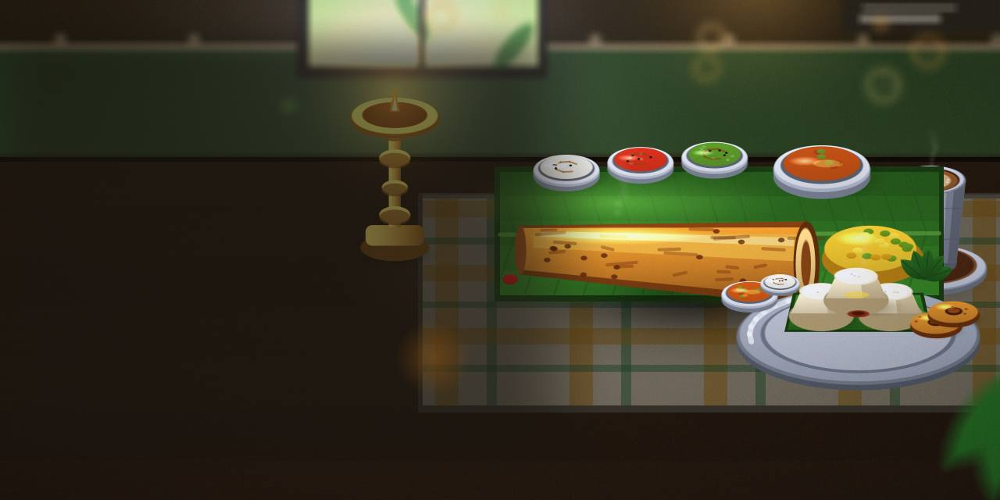
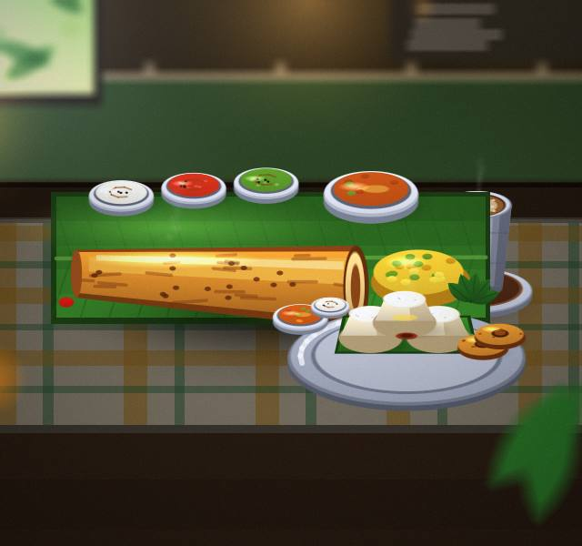
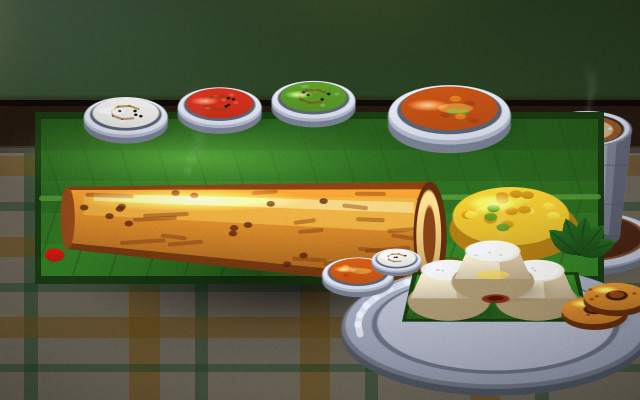
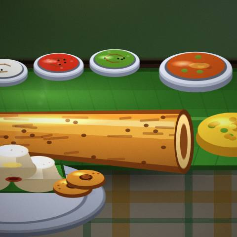
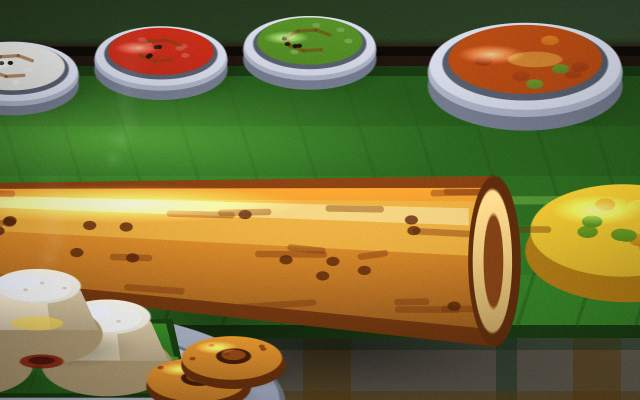
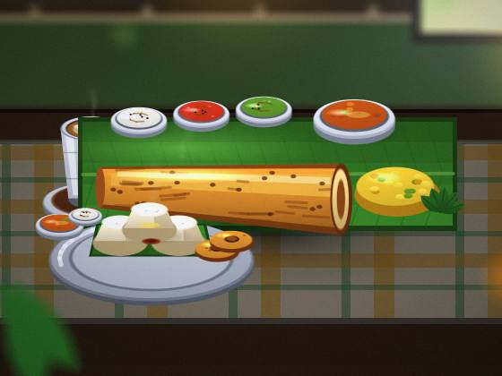

Masala Dosa
A good place to start if you like masala dosa.

South Indian restaurant · Chennai
Filter coffee and pongal in Chennai. Ask the team what they would order.

Filter coffee and pongal: Spice Route Kitchen cooks them in Chennai. Save room for dessert.
In Chennai: online booking and home delivery. Let us know who it is for and we'll suggest options.
A good place to start if you like masala dosa.
Ask us how idli sambar works and what to expect.
Message us about filter coffee; we reply to every enquiry.
Soft rice and lentils cooked with pepper, cumin and ghee. We will explain pongal in plain words.
Order meals for the table, or keep it to yourself.




Let us know the day and the size of the group.
Start with masala dosa or idli sambar; ask about sides.
Good company, no rush, room for dessert.
A short list that saves a second message.
A simple way to stay organised.
The basics, in plain words.
Booking online is available whenever it suits you.
We deliver; message us your location.
Our hours are 7am to 10pm.
Send a message and you'll hear from us.
Come hungry; we will handle the rest.
Book a table online